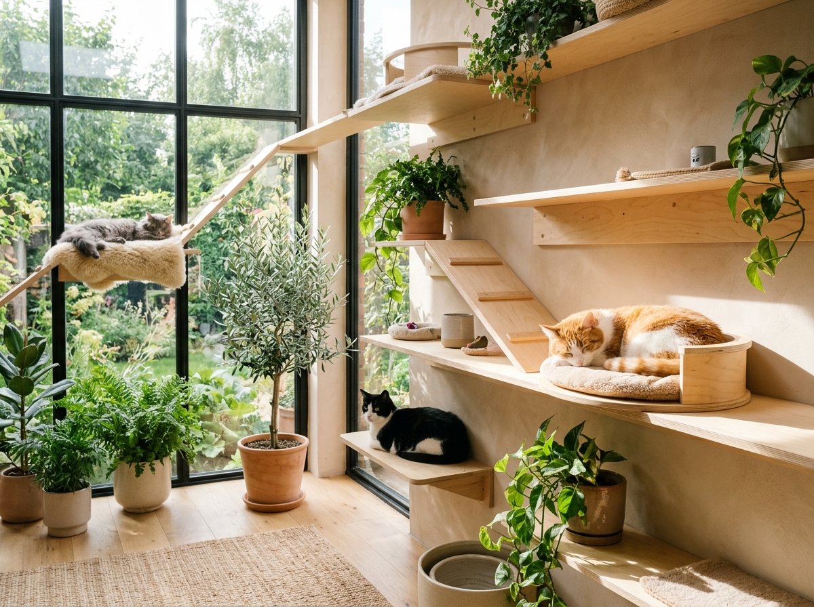
Milo
93% MatchCheerful low-rider who greets every visitor with a tidy bow and gentle courtyard trots.
A calm botanical sanctuary rescuing dogs, cats, kittens, and meadow rabbits. Each companion is vet-cleared, temperament-mapped, and matched to the rhythm of your home.
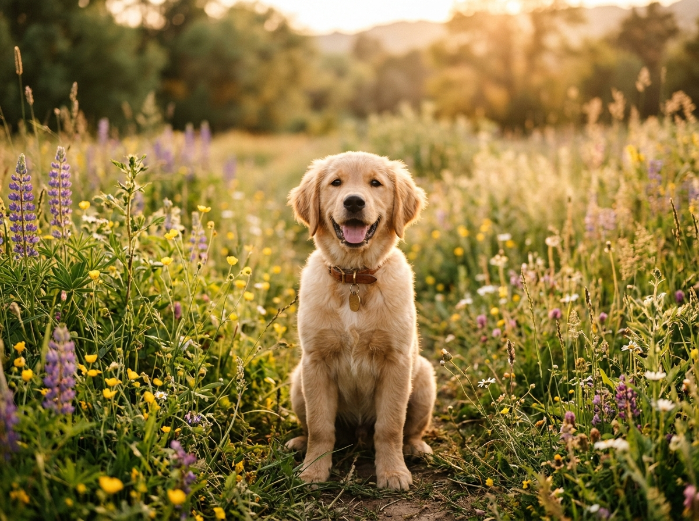

Cheerful low-rider who greets every visitor with a tidy bow and gentle courtyard trots.
Warm marmalade companion with a steady purr rhythm and impeccable windowsill manners.
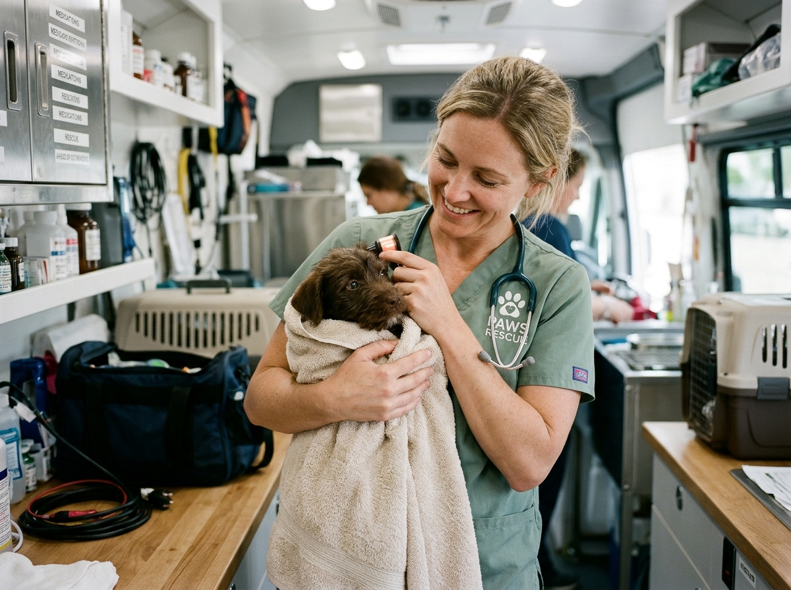
Bright-eyed trail partner who already knows whistle recall, weave cones, and frisbee catches.
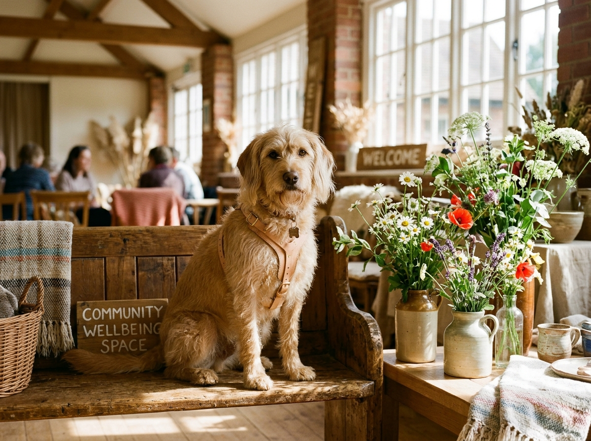
Velvet dove-gray kitten with copper eyes who falls asleep inside linen sweater sleeves.
Litter-trained lop rabbit who flops beside floor cushions and nibbles organic dandelion greens.
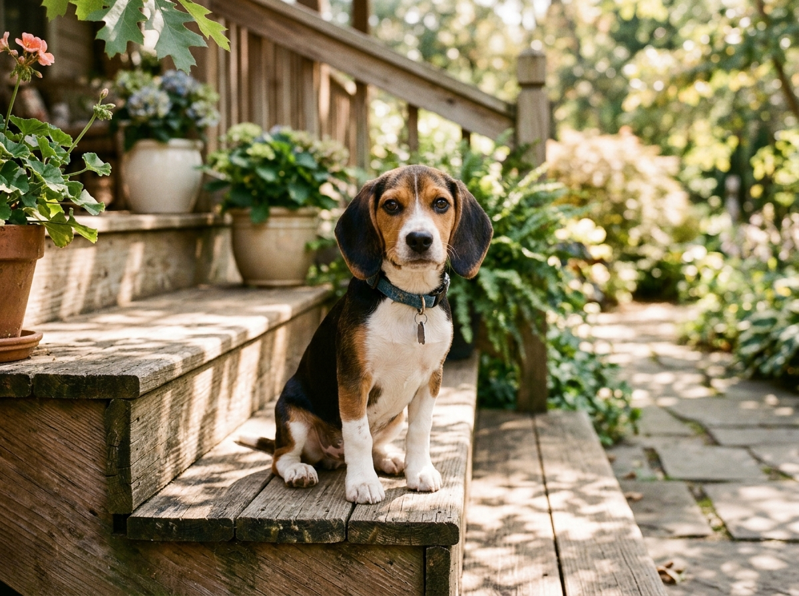
Velvet-eared scent explorer who greets kindergarteners and calm dogs with instant tail wags.
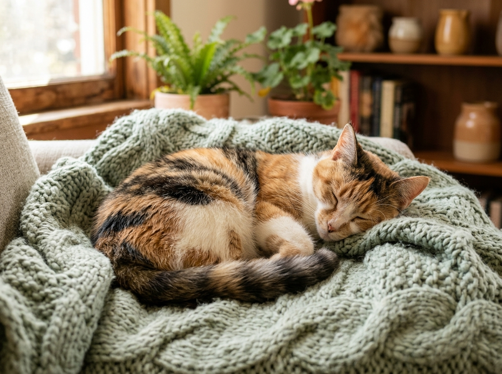
Conversational sapphire-eyed muse who chirps back softly when you make morning tea.
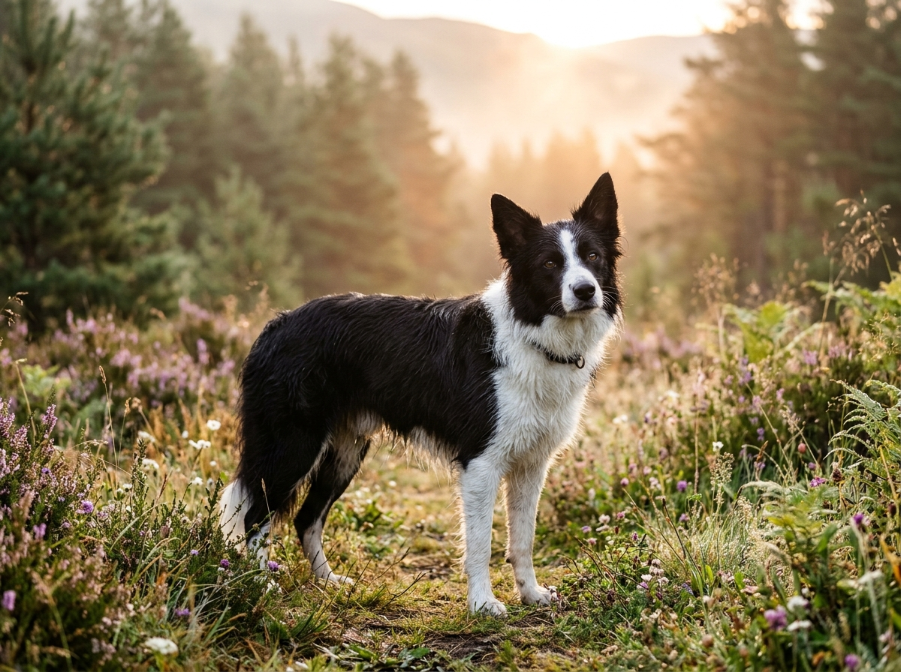
Compact fawn couch companion built for short neighborhood strolls and elevator rides.
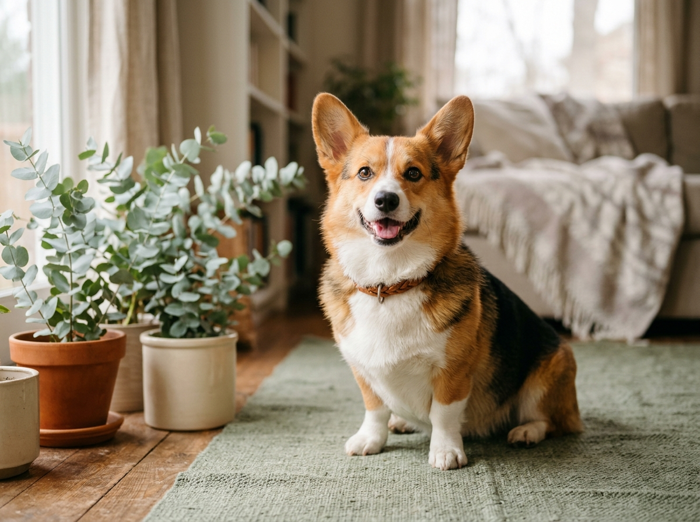
Sun-dappled calico who sunbathes on botanical shelves and loves calm family evenings.
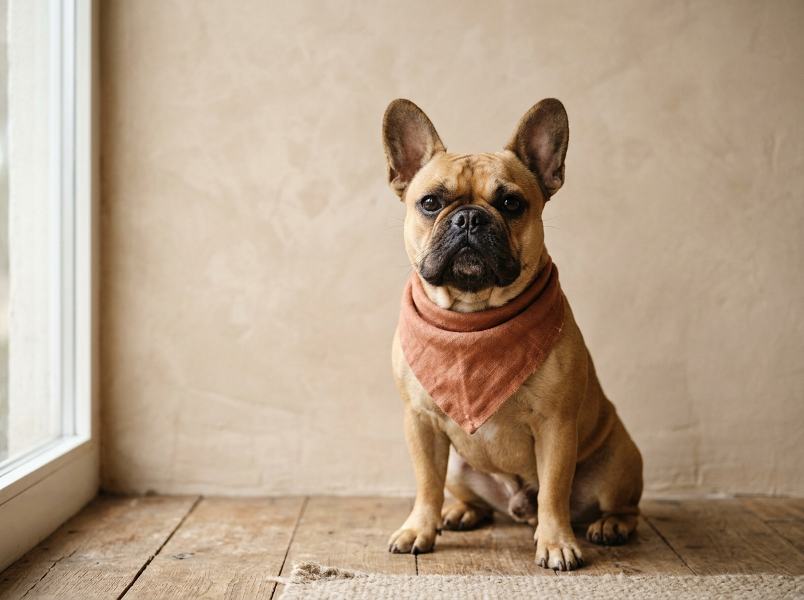
Crisp-coated alpine runner who sings softly at dusk and loves cold forest trails.
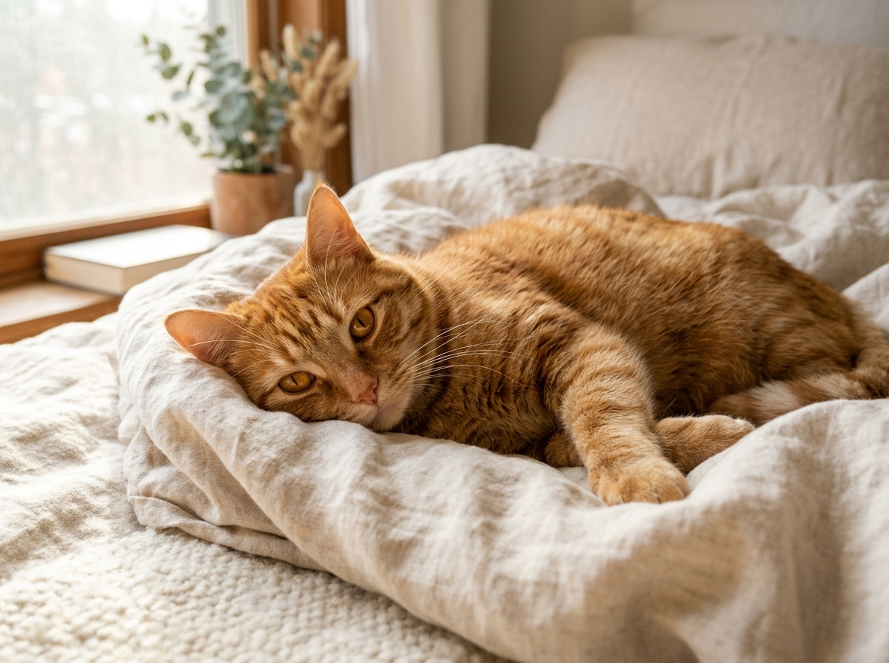
Our solar-equipped veterinary field van completed a 9-day mountain loop, bringing warmth, vaccines, and microchips to isolated farms.
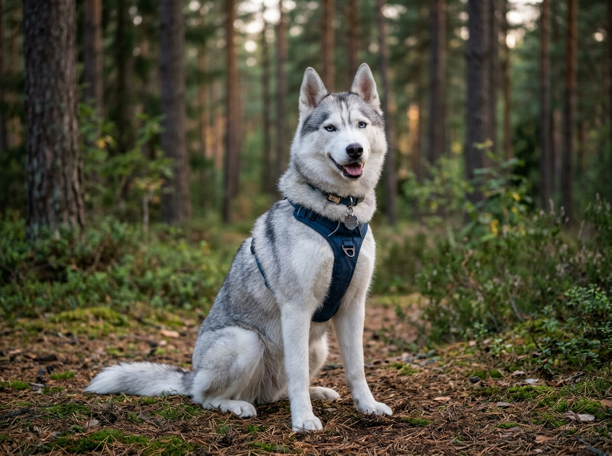
We replaced wire kennels with cedar walkways, fern planters, and radiant heated oak perches designed around feline calm.

Six weeks after surgery and slow leash confidence coaching, our milestone rescue pup celebrated his 1-month home anniversary.
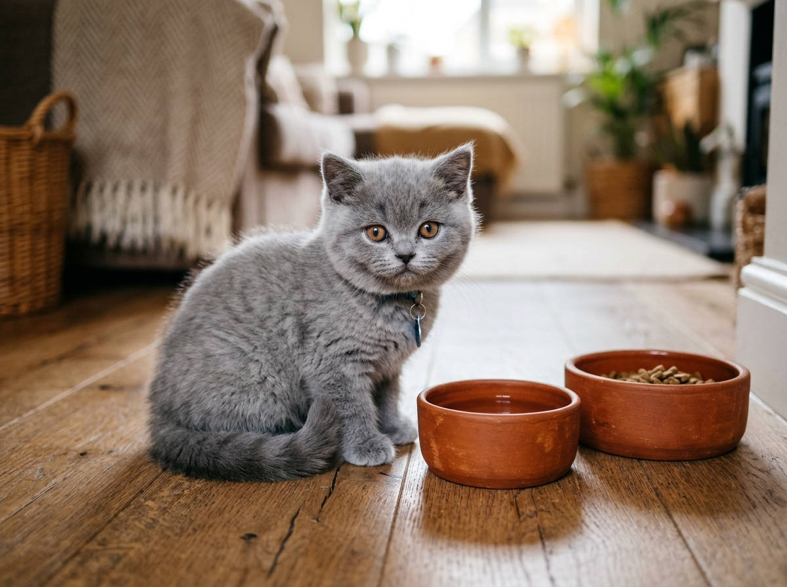
Every Thursday afternoon, gentle certified companions sit beside young readers and assisted-living gardens across Cedar Meadow.
Meet Milo, Saffron, Clover, and seven companions outdoors in our heated courtyard. Free vet Q&A, harness fitting, and warm herbal tea for visiting families.
Choose care kits for recovering arrivals. Selected kits are bundled straight into your Visit & Care Summary.
Every resident receives an international 15-digit ISO microchip registered directly to your family on adoption day, paired with an engraved brass sanctuary collar tag.
An unhurried 25-minute garden sniff walk followed by warm meadow kibble and fresh spring water.
Every adoption comes with a hand-stamped solid brass tag. Preview your companion’s tag live and bundle it free with your Courtyard Visit.
Unsure which companion fits your home? Send us a quiet note or open your Meet List drawer to reserve a private 45-minute courtyard introduction.